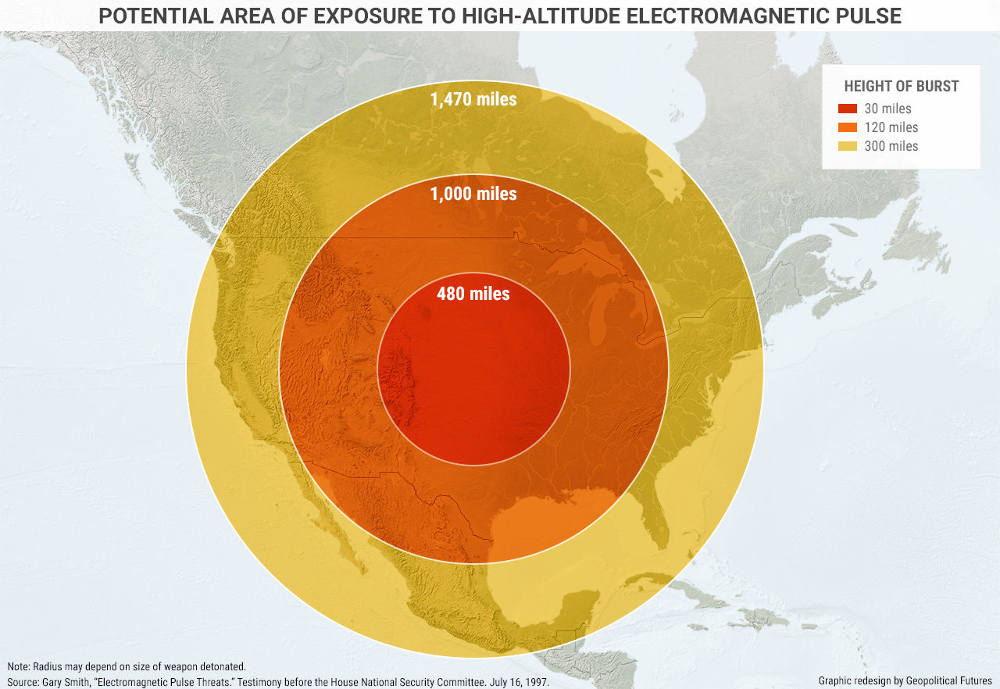
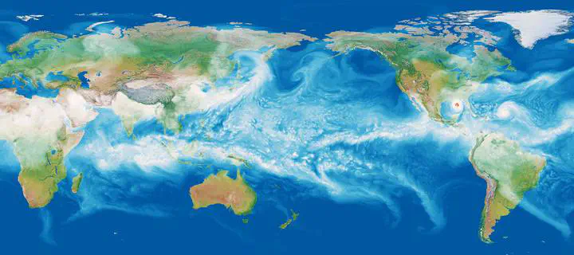
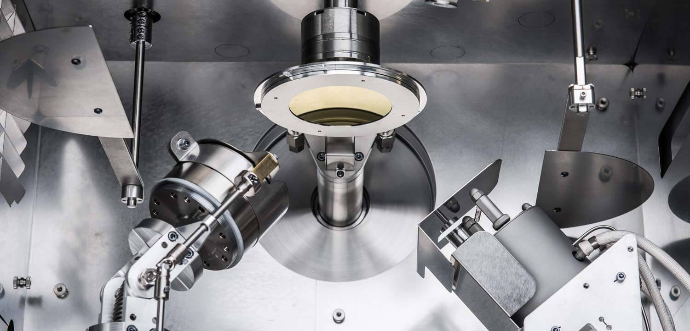

I am a postdoc researcher at a Sandia National Laboratories, where I design algorithms and tools for
Bayesian inference, Machine Learning, and optimal experiment design. My research aims to enhance
problem solving in various fields including ML, controls, material science, climate science,
and power systems. I am passionate about teaching people how to apply these techniques in
their own work and to further advance our understanding of these areas.
nil.das.adri [at] gmail [dot] com
Some Cool Projects
Predict a Power Grid failure during an High Electromagnetic Pulse event.

Calibrate a large scale Energy Exascale Earth System Model for weather predictions, based on surrogate modeling and Bayesian Optimal Experiment Design.

Design experimental for a high throughput process such as physical vapour deposition
on thin film and metal electroplating to optimize material properties.

Improve speed of Uncertainty Quantification calculation of a model.
Activations functions that can learn arbitrary logic.
Metrics for Bayesian Optimal Experiment Design under Model Misspecification.
Variational Kalman Filtering with Hinf-Based Correction for Robust Bayesian Learning in High Dimensions .
Utility and Privacy in Object Tracking from Video Stream using Kalman Filter.
Modeling and Optimal Control of Hybrid UAVs with Wind Disturbance.
Eigen Value Analysis in Lower Bounding Uncertainty of Kalman Filter Estimates.
Optimal Transport Based Filtering with Nonlinear State Equality Constraints.
Privacy and Utility Aware Data Sharing for SSA from En- & Un- Kalman Filtering Perspective.